Gelmiş geçmiş en güzel filmler, seyircileri içine çeken derin anlatımı, karakter gelişimi ve atmosferi ile ön plana çıkan yapımlardır.
Bu tür filmler genellikle izleyiciye unutulmaz bir deneyim sunar ve olay örgüsü ile etkileyici bir atmosfer oluşturur.
Eğer etkileyici filmlerden hoşlanıyorsanız, aşağıda önerdiğimiz filmleri mutlaka izlemelisiniz!
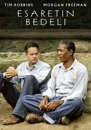
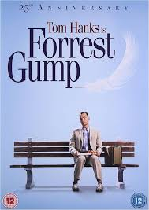
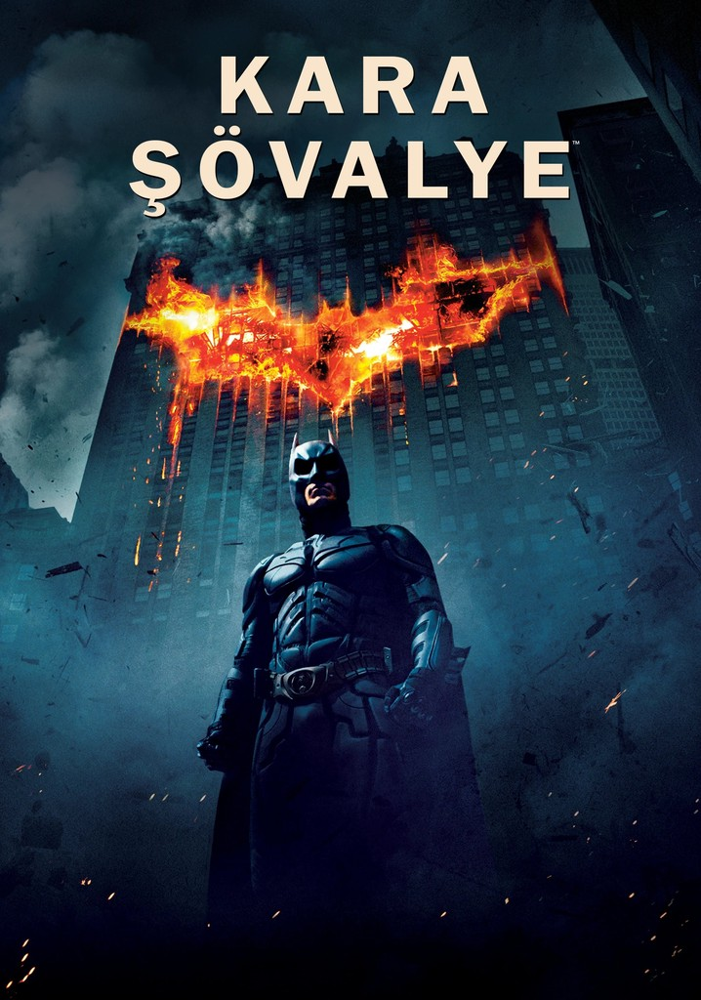
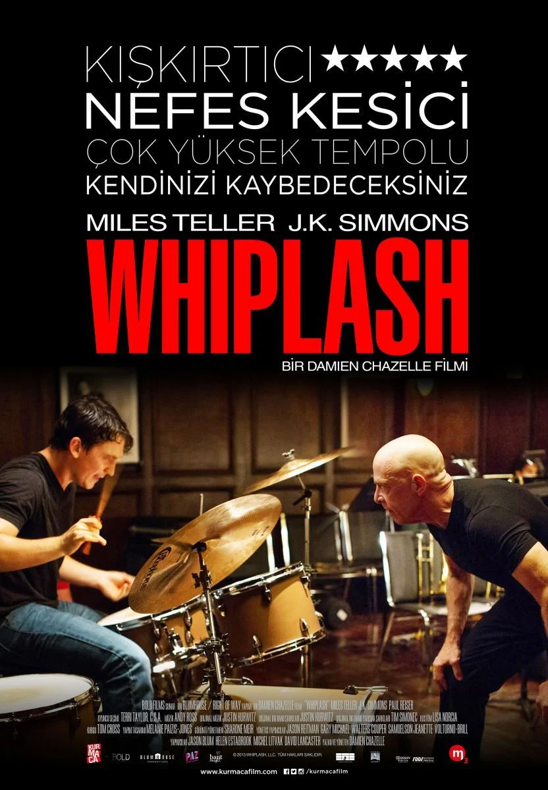
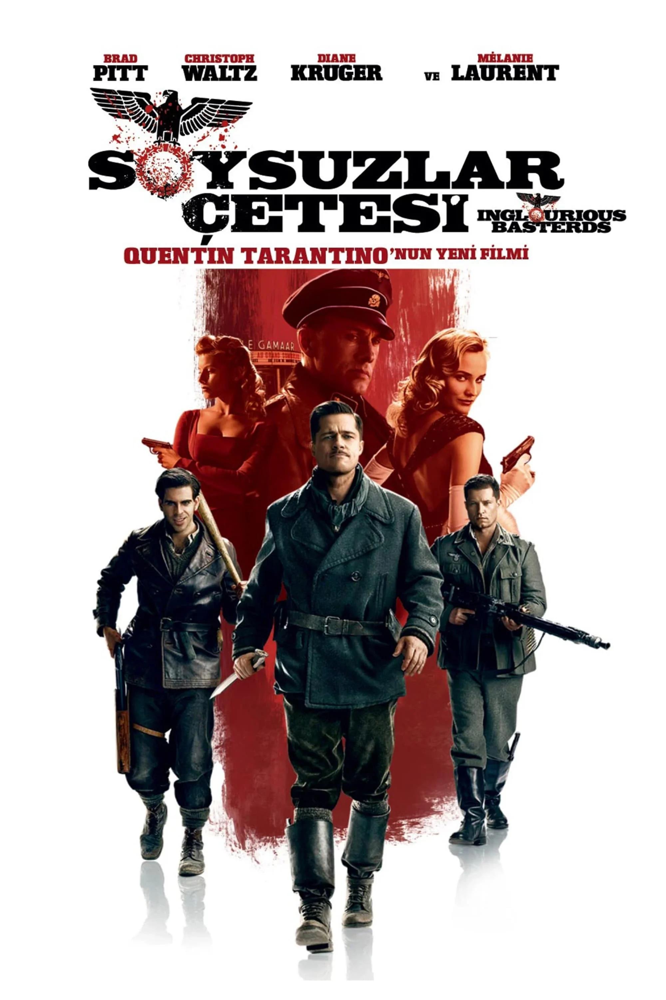
Hakkında
Sinema tarihinin en iyi filmleri, güçlü anlatımları ve etkileyici dünyaları ile izleyicileri kendine bağlayan yapımlardır.
Bu filmler, seyircilerin duygusal bağ kurmasına, karakterlerle özdeşleşmesine ve hikayelere derinlemesine dahil olmasına olanak tanır.
En iyi filmler sadece dram veya aksiyon türüyle sınırlı değildir.
Bilim kurgu, korku ve hatta animasyon filmlerinde de derin anlatımlara sahip yapımlar bulabilirsiniz.
Film
Çıkış Yılı
Tür
Yönetmen
IMDb Puanı
Ülke
The Godfather
1972
Suç/Dram
Francis Ford Coppola
9.2
ABD
Spirited Away
2001
Animasyon/Fantezi
Hayao Miyazaki
8.6
Japonya
The Shining
1980
Korku/Gerilim
Stanley Kubrick
8.4
ABD
Amélie
2001
Romantik/Komedi
Jean-Pierre Jeunet
8.3
Fransa
Bağımsız ve Hollywood Yapımları
Büyük film stüdyoları tarafından üretilen Hollywood filmleri, yüksek bütçeleri ve gösterişli görsel efektleri ile dikkat çekerken,
bağımsız filmler ise yenilikçi anlatım tarzlarıyla öne çıkıyor.

 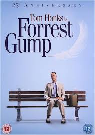
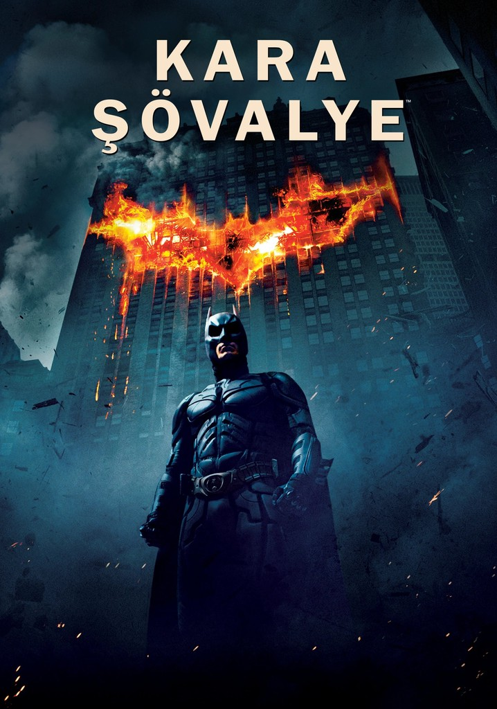
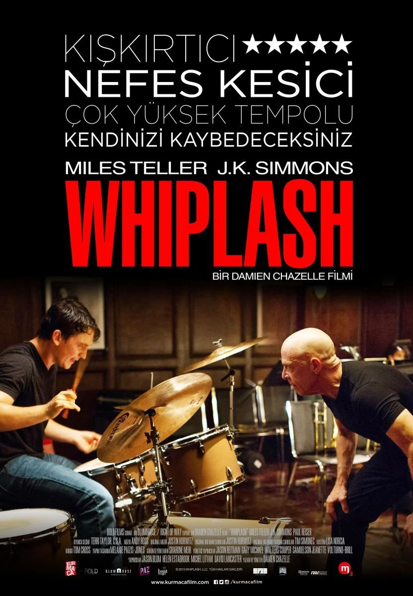
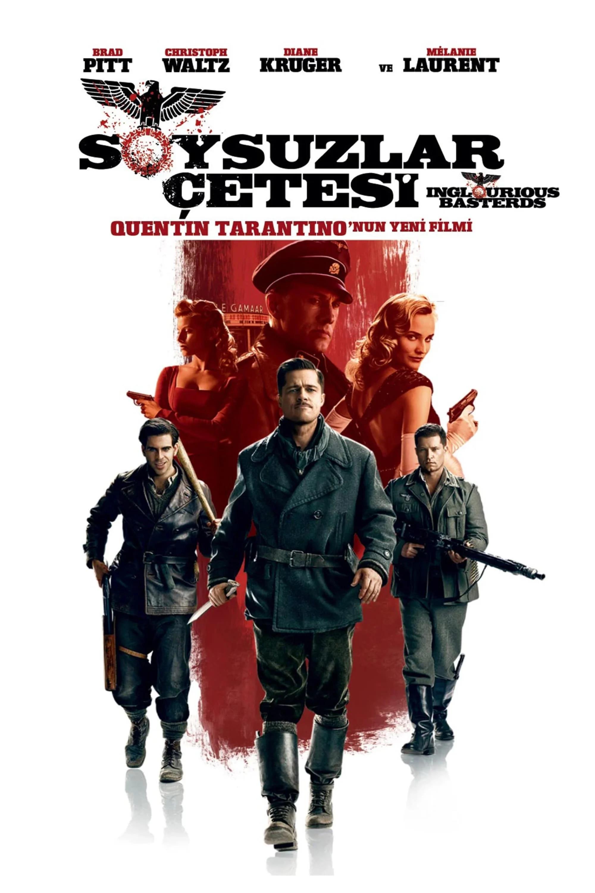
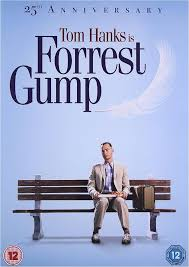
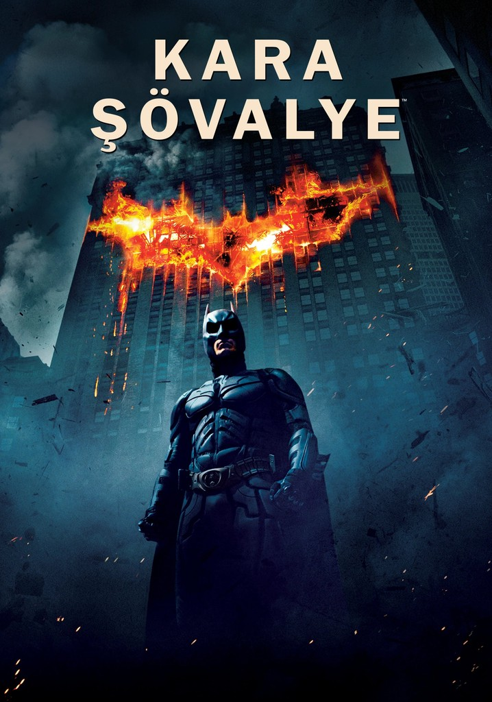
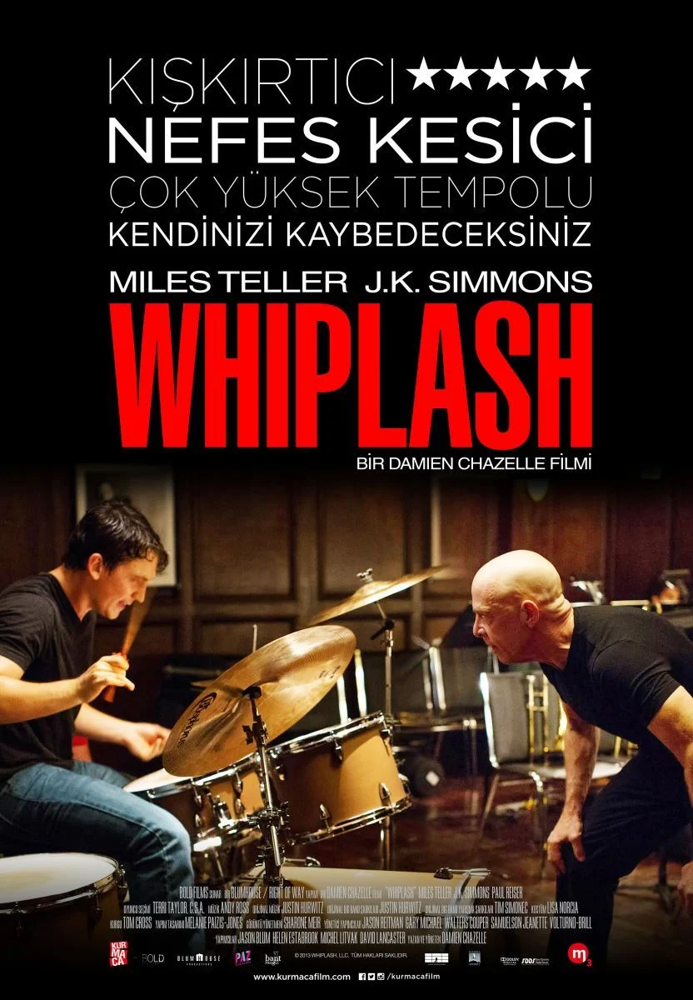
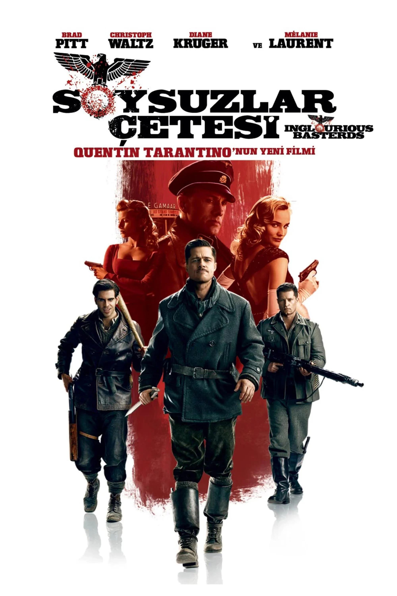